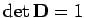
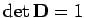

Inhalt Index DeskTop Bronstein

 Lineare Algebra Tensoren Pseudotensoren Einführung des Begriffs Pseudotensor
Lineare Algebra Tensoren Pseudotensoren Einführung des Begriffs Pseudotensor


In Verallgemeinerung der Begriffe Pseudoskalar und Pseudovektor ist ein Pseudotensor n-ter Stufe dadurch gekennzeichnet, daß er sich unter einer reinen Drehung (Drehungsmatrix  mit ) wie ein Tensor n-ter Stufe verhält, sein Spiegelungsverhalten sich aber um einen Faktor -1 unterscheidet. Beispiele für Pseudotensoren höherer Stufe s. Lit. 4.2.
mit ) wie ein Tensor n-ter Stufe verhält, sein Spiegelungsverhalten sich aber um einen Faktor -1 unterscheidet. Beispiele für Pseudotensoren höherer Stufe s. Lit. 4.2.